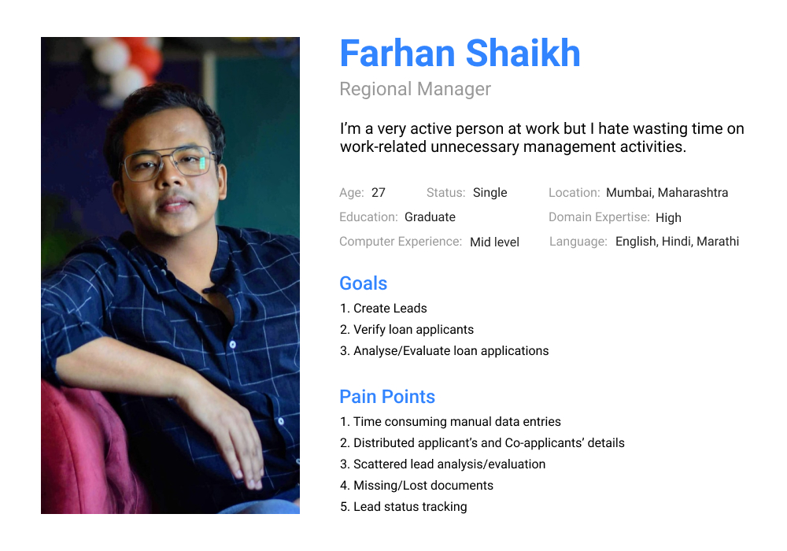
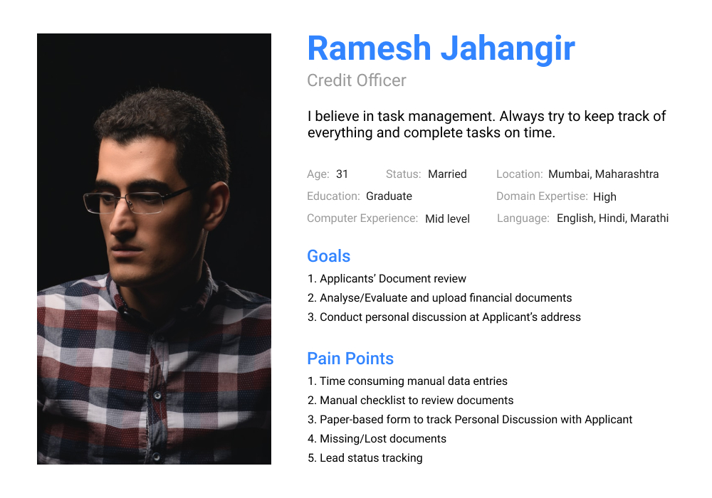
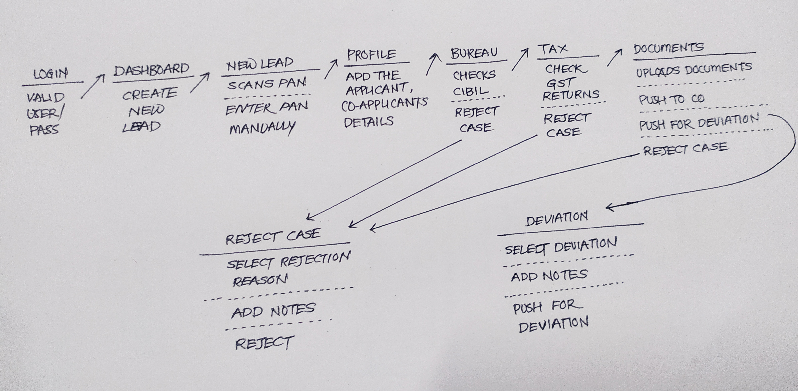
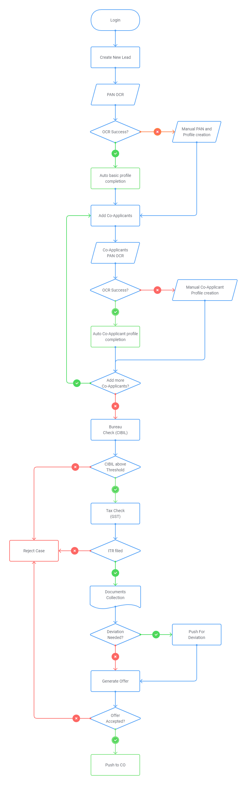

Summary
Digital Lending Platform was an initiative to build a web based loan management portal. I was working onsite closely with all the stakeholders for this project for almost 6 months following an agile methodology. The goal was to overcome the business problems as early as possible by building a MVP with a happy path for users and designing additional features later in the process. My role was to gather requirements from business people, defining activity flow, wireframing and designing high fidelity mockups.
Problem Statement
At the very beginning business team had obstacles like the lead workflow, loan status tracking, document management and communication gaps regarding leads. The Loan Application Form gets reviewed and approved at multiple stages by multiple finance people in a bunch of papers, resulting in latency and losing a valuable lead.
Finding Empathy
To solve this problem of disorganization and overload, first we need to understand before empathising the problem. At the very beginning of the project a meeting was organized to take every stakeholder on the same page. Few survey questions are like:
- What is the typical process of Lead management?
- What milestone can be considered as the success in a given time?
- Are we aiming for a feature-heavy or MVP?
Pain Points
- Minimizing manual data entries
- Making workflow seamless
- Lead Status Tracking
- Document Management
Personas
One of the most important tools to understand and empathise the users is User Persona. We chose to create two personas of two hypothetical users.
- Regional Officer- Responsible for creating and validating leads.
- Credit Officer- Responsible for financial and lending decision making.


Design Solution Ideas
- To minimise data entry tasks, we eliminated some fields at the very first stages of cases like manual data entries regarding Applicant’s Personal Information. As soon as the PAN card is detected with OCR, everything is pulled from an API, and secondary data like age from Birth date is calculated.
- To make workflow seamless we created virtual buckets at various stages of cases and finance people. Every bucket is associated with a particular type of user group keeping data abstraction. Each case is assigned with a timer called lifespan that tells when the case is created and so the user can understand for how much time the case is idle in the bucket.
- To manage all the case documents, we designed a specific stage in the workflow where all the documents can be found even if they are uploaded at various stages of cases. In this Document stage, users can see the required documents, previously uploaded documents and can upload new as well.
- To verify whether the Personal Discussion for Business Loan happened or not and if it happened at any one location given in lead, we captured the location of the meeting as soon as Personal Discussion at applicant place starts.
User Flow
User flows were the most concentrated part of this project as we had an aim to make the processes smooth and track-able using existing mental models. We started thinking from a higher level with less details. This showed us a typical and generalised path of how data moves from one general state to another like this.
Then we started focusing on more details inside each state and possible scenarios that usually occur or can occur. For Regional Managers the flow of tasks in the real world was to grab a lead, collect details and documents, then review them and if everything's up to threshold, give the customer an offer. If a customer accepts the offer, the case is pushed to the Credit Officer for further processes. Sometimes the customer lacks to reach the threshold, in such cases customers could ask for deviations.


Visual Design
Fundamentals for UI design such as brand guide was already available, hence UI is strictly bounded to brand color palette. Keeping deadline in mind, reusability of available components was primary mantra for UIs. Hence UI components are selected according to the platform on which the DLP was about to developed rather than creating custom components. The process for UI design was pretty much straight forward like basic wireframing with Product owners, Designing according to available UI components and Testing.